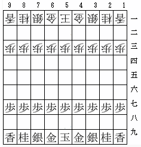
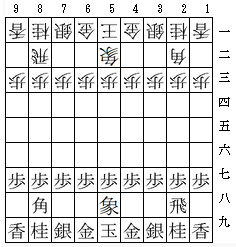
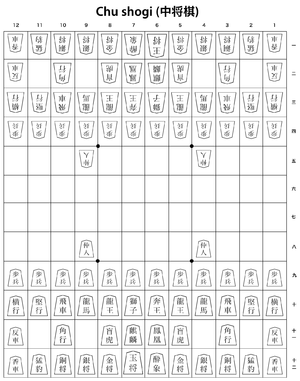

『将棋の歴史』
公開日：
")
- 作者: 増川宏一
- 出版社/メーカー: 平凡社
- 発売日: 2013/02/18
- メディア: 新書
- クリック: 6回
- この商品を含むブログを見る
難しい本は読みたくない気分だったので、気晴らしに新書を買った――ら、えらい面白ろかった。一晩でペロッと読んでしまった。一般人よりも将棋には少し詳しいと自負しているけれど、結構知らないことが多かったかも。
知らなかったことその壱

小将棋（現在の将棋のもとになった将棋）は最初、飛車と角行をもたず、取った駒を使うこともできなかった。玉将・金将・銀将・桂馬・香車・歩兵は最初からあったようだ（『二中歴 - Wikipedia』十三世紀編纂）。

この説明は 小将棋 - Wikipedia とかなり異なる。本書では、「酔象」を中将棋の駒であるとしている。
知らなかったことその弐
小将棋の初期の駒、玉将・金将・銀将・桂馬・香車は珍品佳宝を表す形容詞（つまり、あまり大きな意味はない）。これは和銅五年（西暦712年）に定められた諸国郡郷名著好字令（諸国郡郷名著好字令とは (ショコクグンゴウメイチョコウジレイとは) [単語記事] - ニコニコ大百科）の影響であるらしい。
知らなかったことその参
江戸時代の棋譜は、現在のようにマス目の位置を数字で表すのではなく、右上から縦に「いろはに……一二三……花鳥風月春夏秋冬……」を割り振って表していたらしい。たとえば、「7六歩」は「春歩」になる。
将棋学
大雑把に言って、将棋はチェスと兄弟のインド生まれで、シルクロードではなく、海の道を伝って日本に伝来したらしい。個人的には、道具や概念だけが伝わって、日本独自にルールを開発したと考えるのも楽しいと思う。のちに取った駒を再度使うルールを考え出したぐらいだから、こういうゲームを考え出すに足る頭脳と素養はあったのではないかな。
で、最初は駒の多い大将棋と、少ない小将棋があった。

『二中歴』によれば当時の大将棋の盤は“十三間”（13×13）であり、大将棋 - Wikipedia と食い違う。もっとも、大将棋は駒を多くしたり、動きのバリエーションを増やして面白味を増そうと試みられていたようで、『普通唱導集 - Wikipedia』（十四世紀）では盤も駒の数も多くなっている。のちに現れた 中将棋 - Wikipedia はその派生・改善版か。
一方、小将棋も大将棋・中将棋とともに愛されていたが、のちに“取った駒を使う”というルールが導入される。大将棋・中将棋が駒の数と動きのバリエーションを増やす方向で進化したのに対し、小将棋はルールを追加することで深みを増す方向に進化したのだ。ルールが比較的シンプルな小将棋は、安土桃山・江戸期よりとくに広がりを見せ、家元制度や段位制度が整えられていく。
その後、近現代に入ると相続による家元制度は衰え、実力制へと移っていく。そのバックとなったのが新聞社だった。当時の新聞社はマスメディアを一手に引き受けており、囲碁や将棋はそのコンテンツとして魅力的だったというわけだ。そして、紆余曲折を経て今に至る。
こうした歴史・伝統・文化を、西洋の「チェス学」に対抗しうる「将棋学」として確立したいというのが著者の願いだという。大いに結構で、応援したいと思った。
けれど、こういう新書本に文句をつけるのもどうかと思うが、もっとドロドロとしたところ――将棋連盟のお家騒動や棋戦と新聞社の関係における争い――なども詳述する必要があるなぁ、と感じた。史料に頼ってた前半は客観的だけれど、実際に見聞した現代の章になると駆け足気味で、若干分析が甘くなる傾向が見られたように思う。
とは言え、とっても面白かった。